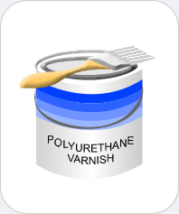

|  |
Polyurethane Varnish
Chemicals you may find: #1 |
| Fungicides are chemicals that prevent the growth and spread of unwanted fungi, which tends to damage and/or kill crop and garden plants however they may be potential health hazards to pets and humans. There are two types of fungicides, contact and systemic. Contact fungicides kill when sprayed on the fungi while systemic fungicides kill when absorbed into the fungi. There are many types of fungicides. They may include captan and acetic acid, among others. | |